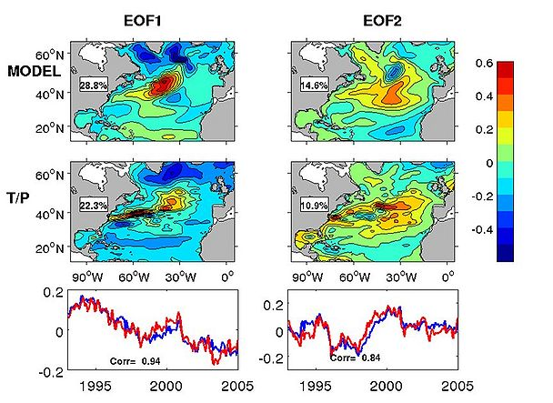

Stars are the furnaces in which are forged the atoms of carbon, nitrogen and oxygen from which we are made, and the aluminum, silicon and iron from which we make our tools. Stars live out their life cycles in the context of galaxies, those luminous collections that relieve the darkness of the universe. By studying the clustering of galaxies we are able to discern how their distribution and properties are related to the evolution and history of so-called dark matter, which is now understood to dominate the physics of the universe on the largest scales.
Our research involves simulations of millions of galaxies in an effort to produce the best statistical study of its kind. Without high-performance computers to handle the terabytes of data it is doubtful that we could finish this project before our sons and daughters gave birth to their children.

It's an old joke that 'Climate is what you expect; weather is what you get.' Researchers Zeliang Wang, Frederic Dupont, Youyu Lu, the late Dan Wright, and others at the Bedford Institute of Oceanography, Dalhousie University and Environment Canada have been trying to reduce that gap.
Their focus is on ocean climate and operational oceanography, particularly in the North Atlantic and Arctic Oceans where ice-cover is a major factor in climate (and weather!) prediction. They test improved mathematical models for ocean dynamics by simulating 50 years of ocean conditions on a computer cluster. A typical run may take over 3 weeks to compute on 20 CPUs.
The figure shows an EOF decomposition of one particular model and its prediction of sea surface height in the North Atlantic, as well as the correlation with historical values.